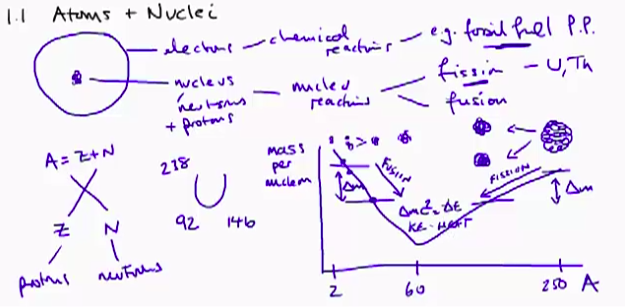
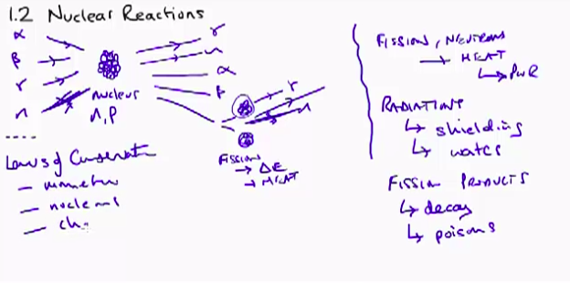
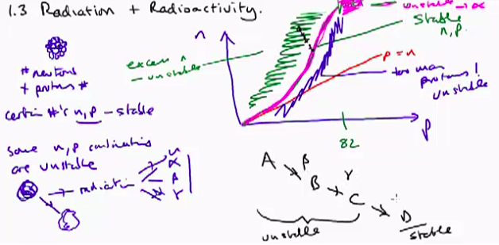

Index
- Section 0
- Section 1 - Nuclear Basics
- Lecture 1.0 - Learning outcomes and technical tour
- 1.1 Atoms and Nuclei
- 1.2 - Nuclear Structure & Nuclear Reactions
- 1.3 Isotopes and Radioactivity
- 1.4 Radiation and Interactions with MAtter
- Section 2 - Neutrons and Fission
Lecture 1.0 - Learning outcomes and technical tour
Course Topics:• Nuclear Basics
• Neutrons and Fission
• Reactor Modules
• Health & Safety + Lifecycle Analysis
Learning Outcomes:
• Understanding of basic nuclear theory on power plants
• Ability to apply analytical methods
• Understanding of practical reactors
• Appreciation of the wider aspects of nuclear power
Section 1 Summary:
1.1 - Atoms and Nuclei
• Electrons are involved in “chemical reactions” - like in standard fossil fuel plants
• Nuclei are involved in Nuclear reactions. (generally Uranium or Thorium in fission)
• Need to know “mass per Nucleon” for different atomic number (size of nucleus)
• This change is not linear - decreases until A=60 then increases
• As Mass decreases energy is released (as kinetic energy/heat)
• delta(E) is calculated using Einsteins theory - energy released due to change in mass

1.2 - Nuclear Reacors
• How does a nucleus react when radiation or a neutron is imposed on it?
• What output occurs (Alpha, beta, or gamma radiation released OR a neutron released OR more fission?)
• All reactions important but fission and neutrons is the desired output.
• radiation has implications on design (shielding, Health and Safety, waste)
• Fission products can be poisons depending on decay characteristics)
• LAWS OF CONSERVATION:
◇ Different to classical physics
◇ Momentum is conserved
◇ Number of nucleons conserved
◇ Charge is conserved
◇ Energy + Mass iis conserved

1.3 - Radiation and Radioactivity
• Certain Nuclei are stable but become unstable with different numbers of Neutrons and Protons
• These will then decay to another state through the emmission of radiation
• As the number of protons increase, more neutrons are needed for stability.
• Too many neutrons will probably emit beta radiation
• May be multiple radioactive decays before reaching stable state, Radiation is emitted at each stage

1.4 - Radioactive Decay
• looks at decay characteristics,
• Half-Life - time taken for 50% of radioactive material to decay
• Abundance -
• Types of Radiation - Alpha Beta Gamma characteristics
◇ Path lengths and Sheilding requirements